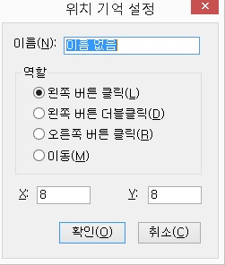
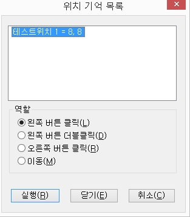

읽기 포인터로 접근할 수 없는 컨트롤이나 위치에 이름을 붙이고 여러 가지 역할을 실행할 수 있는 기능입니다.
최근에 출시되는 프로그램들 중에는 어떠한 화면읽기 프로그램이라도 접근할 수 없는 버튼이 사용된 경우가 종종 있습니다. 이런 경우에 '위치 기억' 기능을 사용하면 문제가 되는 버튼들을 클릭할 수 있습니다. (예: 소리바다의 인스톨 버튼, 나모 웹에디터의 설치 버튼 등)
위치 기억 사용방법
① '위치 기억' 기능이 필요한 프로그램을 실행합니다.
② <Insert-Numpad-(대쉬)>키를 눌러 마우스 포인터로 변경합니다.
마우스 포인터로 변경하는 이유는 정안인과 함께 작업을 할 때 읽기 포인터의 위치를 시각적으로 확인할 수 있게 하기 위해서입니다. 반드시 마우스 포인터로 변경해야 되는 것은 아니고 대개의 경우 시각장애인 혼자서 객체를 찾을 수 없는 경우에 '위치 기억' 기능을 사용해야 함으로 정안인의 읽기 포인터 식별을 위해 마우스 포인터로 변경하는 것입니다.
③ 정안인의 도움을 받아 클릭이 필요한 객체나 위치 위에 실제 마우스를 옮겨 놓습니다.
④ <Alt-Numpad/(슬래시)>키를 눌러 위치 기억 설정 대화상자를 엽니다.

⑤ '이름' 편집창에 객체의 이름이나 위치의 이름을 입력합니다. (예: '확인 버튼', '설치 버튼')
⑥ '역할' 라디오 버튼에서 실제 마우스를 사용할 때 해당 객체를 조작하는 방법을 선택합니다. 역할에는 '왼쪽 버튼 클릭', '왼쪽 버튼 더블클릭', '오른쪽 버튼 클릭', '이동' 등이 있습니다.
⑦ '확인' 버튼을 눌러 대화상자를 닫습니다.
⑧ <Ctrl-Alt-Shift-S>키를 눌러 일반 환경을 저장합니다.
위치 기억 기능으로 지정된 목록의 갱신과 역할 동작을 실행합니다.
위치 목록은 이름순으로 정렬되어 있습니다.

1. 역할의 동작
원하는 위치 목록에 포커스를 맞추고 <Enter>키를 누르면 위치 기억시 설정한 값에 따라 역할이 실행됩니다.
역할은 '왼쪽버튼 클릭, 왼쪽버튼 더블클릭, 오른쪽버튼 클릭, 이동'의 네 가지가 있습니다.
2. 목록 이름 변경
이름 변경을 원하는 목록에서 <F2>키를 누르면 편집기에서와 마찬가지로 해당 목록이 편집창으로 바뀝니다. 원하는 이름을 입력한 뒤 <Enter>키를 누르면 이름이 변경됩니다. 변경 후에는 '확인' 버튼을 눌러 창을 닫고 <Ctrl-Alt-Shift-S>키를 눌러 일반 환경 저장을 해 줍니다.
3. 위치 목록의 삭제
삭제를 원하는 목록에 포커스를 맞춘 뒤 <Del>키를 누르면 목록이 삭제됩니다. 삭제 후 '확인' 버튼을 눌러 창을 닫고 <Ctrl-Alt-Shift-S>키를 눌러 일반 환경 저장을 합니다.
4. 위치 목록의 변경
① 변경을 원하는 목록에서 <Popup>키를 눌러 팝업 메뉴를 연 다음 [변경] 메뉴항목을 선택합니다.
② '위치 기억 설정' 대화상자가 열리면 변경을 원하는 항목을 수정합니다.
③ '확인' 버튼을 눌러 위치 목록으로 돌아갑니다.
④ '확인' 버튼을 다시 눌러 위치 목록을 닫습니다.
⑤ <Ctrl-Alt-Shift-S>키를 눌러 일반 환경을 저장합니다.
위치기억 목록을 호출하지 않고 단축키를 이용해 위치기억 기능을 실행하는 기능입니다.
자주 사용하는 위치기억의 경우 이 기능을 활용하면 좀 더 효율적인 작업이 가능합니다.
단, 이 기능의 경우 단축키는 미리 정의되어 있지 않기 때문에 센스리더의 환경 설정 -> 기능키 설정 기능을 통해 기능키를 미리 정의하고 사용해야 합니다.
임시 위치기억에서 지정된 위치로 읽기 포인터를 이동하고 해당 라인을 읽어줍니다.
통신의 머드나 채팅 등에서 자주 확인해야 하는 라인이 있을 때 이 기능을 활용하면 편리합니다.